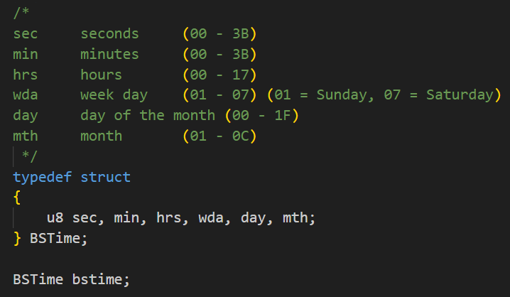
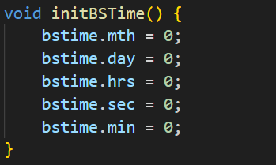

This is a demo to showcase the way I integrate Satellaview features to a PVSnesLib project.
Video of the demo: https://youtu.be/HI_O6bwIuIU
Download the rom (bs-demo-mpack.bs): https://github.com/Krokodyl/bsdemo-mpack
First, you need to have the PVSnesLib environment set up. Follow the instructions on the wiki and try to compile any of the examples provided to make sure it’s working.
Second, you can get the sources for the demo by cloning or downloading the github repository below.
I will only go into details about the specific Satellaview features. For anything that’s general to snes dev, I’ll leave useful links at the bottom of this page.
Sources
https://github.com/Krokodyl/bsdemo-mpack
Changes
Other than the main code in .c files, I added/modified the following files:
| _ | file | use |
|---|---|---|
| Added | bs-features.asm | bs-x API |
| Modified | data.asm | header |
| Modified | hdr.asm | new interrupt vectors |
| Modified | Makefile | integrates the converter |
| Added | src/bstime.h src/bstime.c | handles the time channel |
| Added | tools/sfc-bs-converter-1.0.exe | converts SFC into BS |
| bs-features.asm |
|---|
| bsStart bsVBlank bsSaveTownRam bsReturnToTown bsRebootBios bsTimeReset bsTimeUpdate spcReset |
Features
1. Reboot BIOS

Effect: Exit the game and return to the welcome screen.
Simply call spcReset() then bsRebootBios() in your code.
spcReset() puts the APU back in its initial state.
If you haven’t loaded music/sfx to the APU, you don’t have to call spcReset().
If you’re using a different sound driver than snesmod (the default in pvsneslib), you’ll have to call whatever reset APU function is available to you (or modify spcReset in bs-features.asm).
bsRebootBios() calls the reboot hook $105C3C.
Example in the demo: menu.c
if (selectedOption==OPT_REBOOT) {
playSound(SFX_MENU_SELECT);
spcFadeModuleVolume(0, 30);
setFadeEffect(FADE_OUT);
spcReset();
bsRebootBios();
}
2. Return to town

Effect: Exit the game and return to the building from which the game was launched.
This feature is more complex than a bios reboot.
First, modify the vectors in hdr.asm
| before | after |
|---|---|
| NMI VBlank | NMI bsVBlank |
| RESET tcc__start | RESET bsStart |
Second, call spcReset() then bsReturnToTown() in your code. (Any comment about spcReset, in the Reboot BIOS section, applies here as well)
Explanation:
bsStart will save the first $2000 bytes of WRAM and the Stack Pointer value at the address TOWN_ADDR and TOWN_ADDR-2 respectively ($7FE000 by default).
This is called as the reset vector because it needs to happen before any change is made to the wram or the stack.
You can change that address in bs-features.asm if you need to:
.EQU TOWN_ADDR $7FE000
Just make sure to leave room for $2000 bytes after and 2 bytes before.
Your code should obviously not write in that area.
bsReturnToTown restores the saved WRAM and jumps back to the bs-x NMI.
bsVBlank replaces the regular VBlank as there are a few clock cycles when between the WRAM restoration and the jump to the bs-x NMI where an interrupt could occur and trigger the PVSnesLib NMI (which would break as the Stack Pointer is no longer the same).
Example in the demo: menu.c
if (selectedOption==OPT_EXIT) {
playSound(SFX_MENU_SELECT);
spcFadeModuleVolume(0, 30);
setFadeEffect(FADE_OUT);
spcReset();
bsReturnToTown();
}
3. Time Channel

Effect: Get the current date and time from the Time Channel.
| src/bstime.h | _ |
|---|---|
|  | defines a struct that will hold the time data |
| src/bstime.c | _ |
|---|---|
|  | initializes the bstime struct |
During the initialization of the game, you need to call
initBSTime() and bsTimeReset().
bsTimeReset() resets the BS-X Stream 2 data queue and tune in channel 0 (on reg $218E).
Then everytime you want to update the bstime struct, you call bsTimeUpdate(&bstime). In the demo, I call it once per frame but you could have a counter and call it every 60 frames to the same effect.
Possible improvement: check that the values fall within the correct range.
Then it’s up to you to use the time data as you need (in the demo, I print it on background 3) with bstime.hrs, bstime.min and so on.
Example in the demo: bs-demo.c
if (showTime) {
bsTimeUpdate(&bstime);
printDate();
printTime();
}
SFC to BS conversion
I made a small CLI tool, integrated to the build, in order to convert the .sfc file into a .bs file.
The tool updates the header and recalculates the checksum.
Link to the sources: https://github.com/Krokodyl/sfc-bs-converter
Integration to PVSnesLib
First, place the executable (.exe or .jar) in a tools folder at the root of your project.
Second, modify the Makefile
export SFCBSCONV := tools/sfc-bs-converter-1.0
# OR
# export SFCBSCONV := java -jar tools/sfc-bs-converter-1.0.jar
AUDIOFILES := snd/sfx.it snd/music.it
export SOUNDBANK := snd/soundbank
include ${PVSNESLIB_HOME}/devkitsnes/snes_rules
.PHONY: bitmaps all
#---------------------------------------------------------------------------------
# ROMNAME is used in snes_rules file
export ROMNAME := bs-demo-mpack
SMCONVFLAGS := -s -o $(SOUNDBANK) -V -b 5
musics: $(SOUNDBANK).obj
all: musics bitmaps $(ROMNAME).sfc sfcbsconv
clean: cleanBuildRes cleanRom cleanGfx cleanAudio cleanBS
cleanBS:
@echo clean BS rom
@rm -f $(ROMNAME).bs
# -d 28 -m 12 Broadcast date 12/28
# -b 29 80 Skip St.GIGA intro (0x80)
sfcbsconv:
@echo Converting rom for the Satellaview
$(SFCBSCONV) -d 28 -m 12 -b 29 80 -t "BS-DEMO-MPACK" -i $(ROMNAME).sfc -o $(ROMNAME).bs $<````
You can change SFCBSCONV to use the .exe or the jar.
You can also add options in the goal sfcbsconv. In the demo, for example, I change the broadcast date to (12/28) and the title to “BS-DEMO-MPACK”.
All available options are detailed on the tool repository.
Once you have your .bs rom, you can run it in an emulator with Satellaview support.
Useful links
PVSnesLib
BS-X
No$ Satellaview Specifications
SNES
Retro Game Mechanics Explained (Youtube)
Super Nintendo Entertainment System Features
SNES dev
Guide to Mask Windows on the SNES
Meow’s Sprite Engine Design Guidelines
Transferring Data to the SNES APU
SNESMOD
MISC
Encoding converter (useful for Shift-JIS)
The Mod Archive (chiptune music)


Share this post: